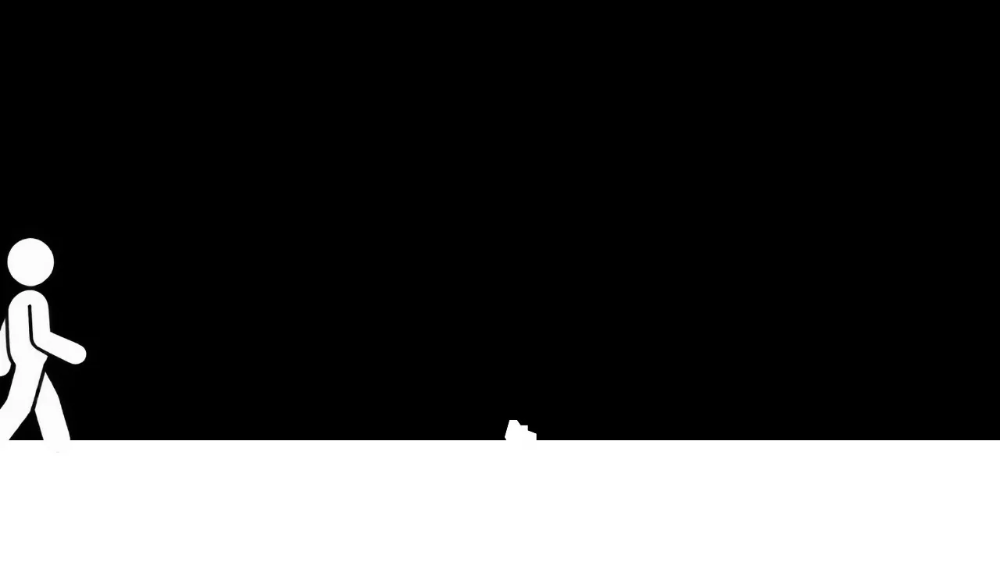

01 / LO QUE EXISTE
La calle construida
Veredas, pavimentos, cruces peatonales, semáforos, intersecciones y condiciones materiales que configuran el recorrido.

Caminar es una experiencia construida entre el cuerpo, la infraestructura y las prácticas cotidianas de la ciudad.
La calle parece un espacio compartido. Pero no todas las personas la experimentan de la misma manera. Su forma, sus cruces y las decisiones de quienes la recorren transforman cada desplazamiento.
Veredas, pavimentos, cruces peatonales, semáforos, intersecciones y condiciones materiales que configuran el recorrido.
Las decisiones, hábitos, dificultades y experiencias que aparecen cuando las personas se desplazan por el espacio público.
Sector de estudio delimitado entre Plaza Sotomayor y Plaza Echaurren.
Sector delimitado entre Avenida Belgrano y Avenida Independencia, según el área de estudio definida.
Las figuras representan personas que se agrupan según las respuestas asociadas a cada dimensión. Selecciona una categoría y observa cómo se reorganiza el conjunto.
DIMENSIÓN 01 / 04
Condiciones materiales del espacio: veredas, pavimentos, continuidad, obstáculos y accesibilidad.
Selecciona una dimensión para observar la distribución de las respuestas.